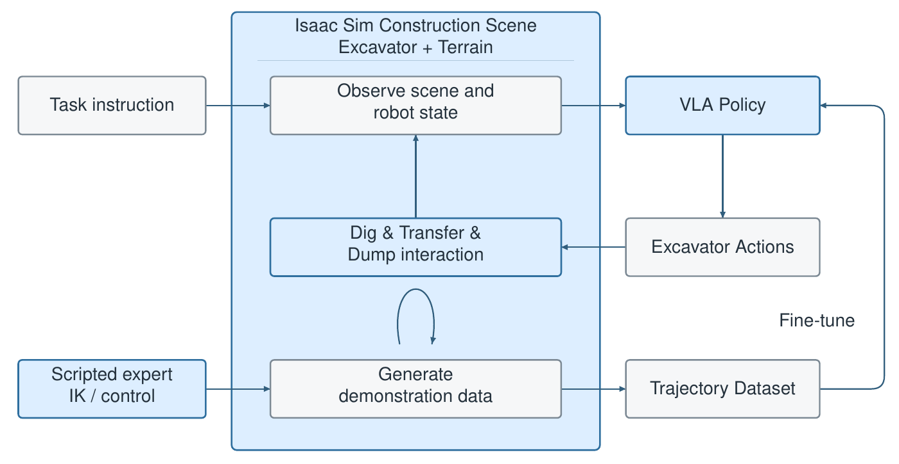
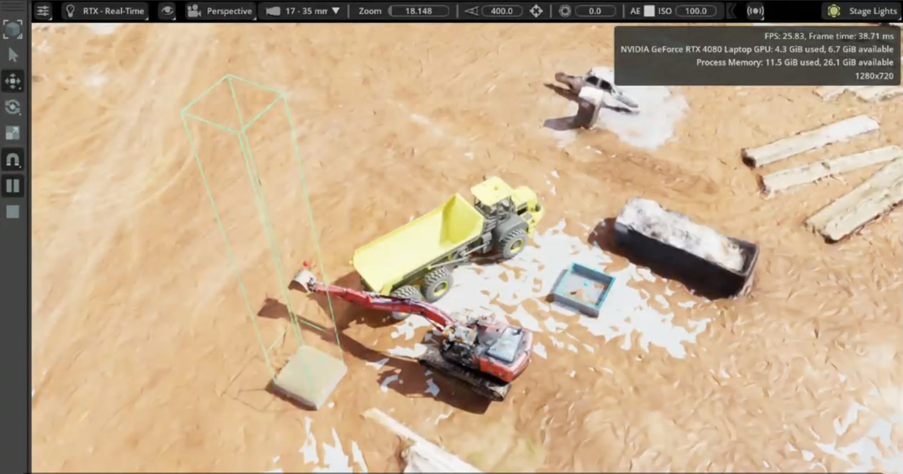
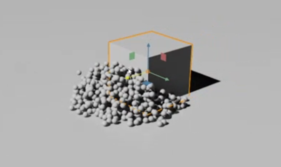
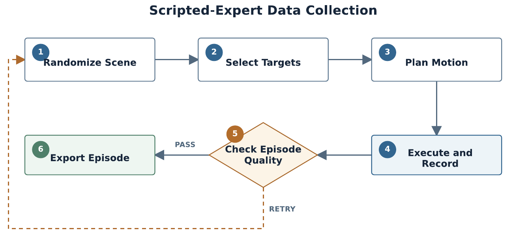
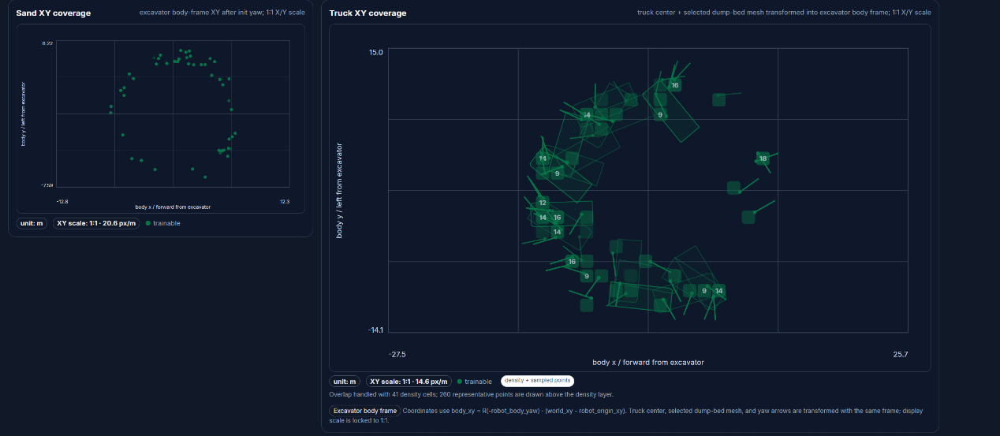
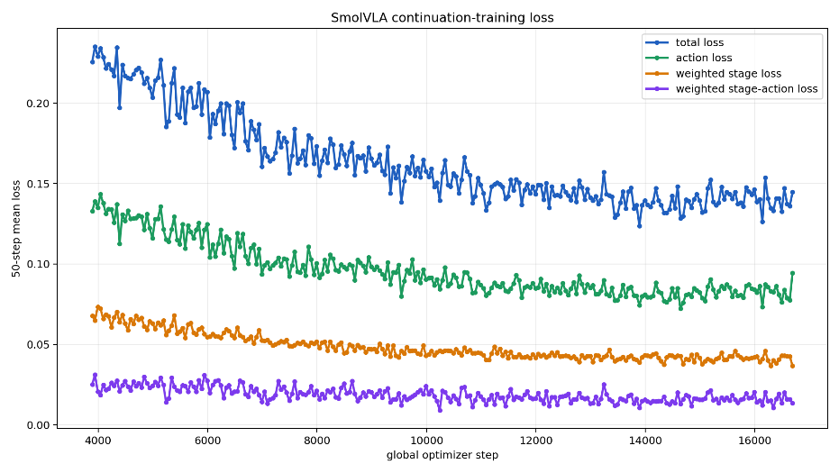
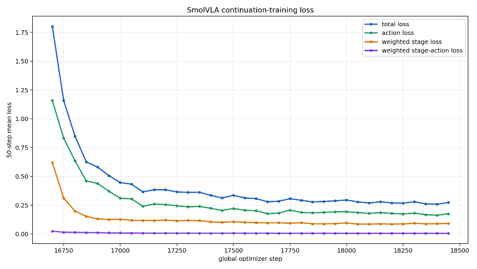
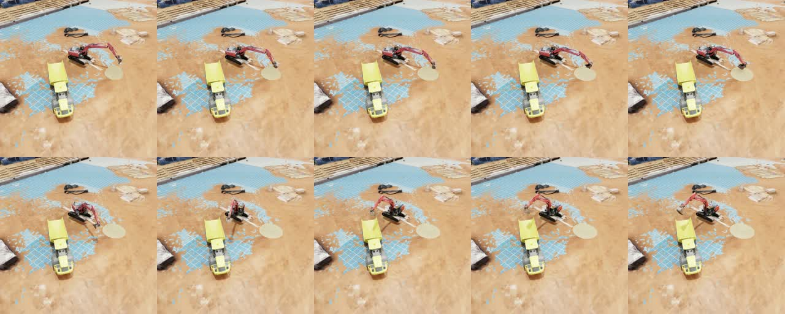
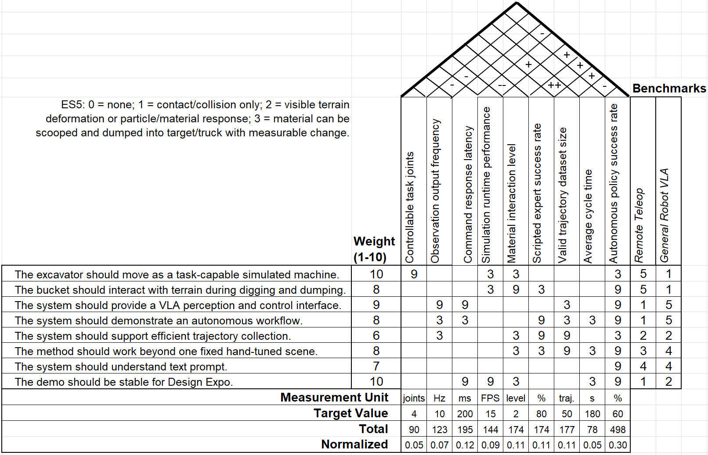
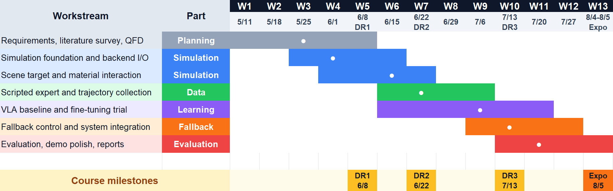

Global College, Shanghai Jiao Tong University · Sponsored by Builder[x] Robotics
Industry mentor: Shiji Liu · Faculty supervisor: Prof. Qianli Chen
Teleoperated excavation removes operators from hazardous worksites, but it reaches only about 70% of on-site productivity and still requires continuous expert attention. We present a simulation-based autonomous excavator that perceives its worksite through three onboard cameras, receives a natural-language instruction, and completes a full dig, transfer and dump cycle into a haul truck.
The controller is SmolVLA, a compact Vision-Language-Action model with a SmolVLM2-500M backbone and a flow-matching action expert. We fine-tune it on 572 demonstrations generated automatically by a privileged scripted expert in NVIDIA Isaac Sim, where granular material is modelled as PhysX particles. We augment training with a stage-classification head and stage-conditioned auxiliary losses. The policy is deployed through a deterministic lockstep bridge that validates the observation contract before any motion. The deployed system meets all eight engineering specifications and achieves 83.5% success over 200 closed-loop episodes, with a mean cycle time of 195 s.
The policy observes three 256 × 256 cameras: one on the arm and two on the upper structure. The 1024² overview camera is recorded for visualization only. All four streams are synchronized to the 10 Hz control loop.
Scenes are randomized (pile, truck, yaw, material quantity). The expert ranks dig points over the particle field, solves analytic IK through a ten-stage scoop, and routes the loaded bucket around the truck.
Three RGB views, a 28D state, 4D joint effort and the instruction map to a 50 × 4 chunk of joint velocities. The vision encoder is frozen; the action expert and state projection are trained.
The simulator pauses during inference, so latency never accrues as simulated time. A versioned handshake validates names, dimensions, rate and normalization statistics before motion.

The expert's motion is decomposed into ten canonical stages. Their labels supervise the auxiliary stage head but are never given to the policy as input.




All spatial terms are expressed relative to the excavator's upper structure. This makes the state invariant to the parking position and initial heading of the excavator.
[ 0– 3] joint positions swing, boom, arm, bucket rad
[ 4– 7] joint velocities rad/s
[ 8–11] tracking error commanded − measured rad
[12–15] previous action rad/s
[16–17] bucket pour axis forward, up unit
[18–20] dig target − bucket tip forward, left, up m
[21–23] unload point − load point forward, left, up m
[24–25] truck heading (relative) sin, cos
[26–27] bucket fill fraction, fill rate

All eight engineering specifications are met (final report, Table 7-1).
| ID | Specification | Target | Achieved |
|---|---|---|---|
| ES1 | Controllable task joints | 4 | 4 |
| ES2 | Closed-loop control frequency | > 2 Hz | 2.1 – 4.0 Hz |
| ES3 | Policy-client response latency | ≤ 10 ms | 6.47 ms (median) |
| ES4 | Simulation runtime performance | ≥ 15 FPS | ≥ 30 FPS |
| ES5 | Material interaction level | ≥ Level 2 | Level 3 |
| ES6 | Valid demonstration trajectories | ≥ 50 | 572 |
| ES7 | Mean cycle time | ≤ 210 s | 195.04 s |
| ES8 | Autonomous success rate | ≥ 60% | 83.5% (167 / 200) |
| Min | Mean | Median | p95 | Max |
|---|---|---|---|---|
| 142.7 s | 195.0 s | 177.2 s | 261.0 s | 269.1 s |
Measured from simulation launch, including scene loading and camera warm-up.
| Component | Time | Share |
|---|---|---|
| Physics (6 steps) | ≈ 33 ms | ≈ 10% |
| 3-camera rendering | 200 – 400 ms | 70 – 80% |
| Encoding and TCP | 7 – 20 ms | ≈ 4% |
| Policy inference | 2 – 3 ms | < 1% |

Evaluation is in-domain, covers a single excavation cycle, and uses a permissive success criterion that does not score payload or spillage. The particle model is not calibrated against terramechanics, and hydraulics and sim-to-real transfer are out of scope. Future work includes held-out visual and geometric domains, mass-based success metrics with failure-stage logging, multi-cycle demonstrations with recovery, a short observation history that would allow removing the supervisor, and reinforcement-learning fine-tuning.
Customer requirements were translated into engineering specifications through QFD, with autonomous success rate ranked as the highest priority (normalized weight 0.34). A morphological chart over simulator, control strategy, data source and material model produced five concepts. The selected concept, Isaac Sim with an end-to-end VLA, a scripted expert and particle material, scored highest (3.65 of 4). It was the only candidate strong in VLA-compatible I/O, automated demonstration generation and material transfer alike.
| Concept | Simulator | Control | Data | Material | Score |
|---|---|---|---|---|---|
| C1 | MuJoCo | Hierarchical | Scripted expert | Height map | 3.22 |
| C2 | Unity | End-to-end | Teleoperation | Height map | 2.00 |
| C3 | Isaac Sim | End-to-end VLA | Scripted expert | Particles | 3.65 |
| C4 | Isaac Sim | Hierarchical | Expert + bucket specialist | Particles | 3.27 |
| C5 | Isaac Sim | End-to-end | Scripted expert | Rigid blocks | 2.61 |


Lingxiao Yang · Xirui Jiang · Haoyun Pan · Runting Zhang · Seak Pang Zou
We thank Builder[x] Robotics and Shiji Liu for sponsoring and guiding the project, and Prof. Qianli Chen for faculty supervision.